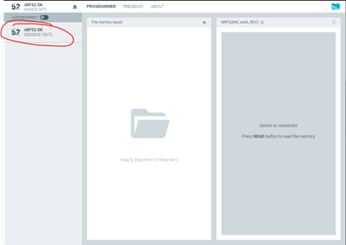

Programming Instructions
Instruction for Config / Logs
On an nPOC-BB (Gamma) unit running firmware v3.1 or later, the file system on the exposed mass storage device and NOR flash 1Gbit storage contains the two subdirectories config and logs, which contain the files for the configuration of the unit and all logs created by the unit, respectively. Below is an example filesystem from a nPOC-BB (Gamma) unit running firmware v3.5 that has been configured to operate four distinct cycles in a run and has logged two distinct runs.
\
├─ config
│ ├─ config_v3.5.txt
│ ├─ cycle_config_1.txt
│ ├─ cycle_config_2.txt
│ ├─ cycle_config_3.txt
│ └─ cycle_config_4.txt
└─ logs
├─ sample_05-21-25_121449.csv
└─ sample_05-22-25_120343.csv
Config
The config subdirectory contains text files that configure the operation of an nPOC-BB unit. The configuration files contain configuration parameters that either apply to the entire run, which may comprise one or more independent cycles, or to cycles, the number of which is configurable. A standard run on a nPOC-BB (Gamma) unit running firmware v3.5 is four cycles: startup; heating; heating and shaking, and passive cooling and shaking.
Note
When a new firmware version is flashed onto a unit, the unit will compare the current firmware version to the Run Configuration file version in storage. If the Run Configuration file name (e.g., config_v3.4) does do not match the flashed firmware version (e.g., v3.5), the unit will delete all configuration files from storage and create new configuration files that match the current version and contains default values. This functionality exists in the firmware to guarantee compatibility with the configuration files.
Run Configuration
A single Run Configuration file will be in the config subdirectory. The Run Configuration file is named after the current firmware of the unit (e.g., config_v3.5.txt when the firmware version is v3.5). The Run Configuration file contains the parameters that configure unit operation for an entire run of one or more cycles (but does not configure the individual cycles; see below). The following table describes the firmware v3.5 Run Configuration parameters and lists their types, default values, and units.
| Name | Description | Type | Default | Unit |
|---|---|---|---|---|
sample_rate |
The rate at which sensors are polled during a run. Do not use values below 0.2. Default value is recommended. | float | 0.2 | s |
logging_rate |
The rate at which sensor data is written to a new log line in the log file during a run. Do not use values below 1. Default value is recommended. | float | 1 | s |
low_power_threshold |
The battery charge percentage below which the unit will enter a non-operational, low-power mode and will not start a new run. | uint16 | 46 | % |
recovery_power_threshold |
The battery charge percentage above which the unit will return to an operational mode from a non-operational, low-power mode. | uint16 | 47 | % |
sample_valid_timeout_s |
The duration for which a sample is considered valid after a run while the sample is not removed (i.e., the lid is not opened), after which the unit will alert. | float | 3600 | s |
alert_timeout_time_s |
The duration of an alert condition. | float | 3 | s |
debug_to_com_en |
The enable for sending all debug messages from the unit to the serial COM port. | bools | TRUE | - |
min_run_zone_temp_en |
The enable for checking the minimum heater board ("run zone") temperature before a run. | bools | FALSE | - |
min_run_zone_temp |
If enabled, the minimum heater board ("run zone") temperature required to start a run. | float | 80 | °C |
do_automatic_runs |
The enable for lifetime or other burn-in tests. Normal operation shuld be FALSE. If set to true, unit will run automatically without user intervention (regardless of sample removal or insertion), pausing for 2×sample_valid_timeout_s seconds between runs. |
bools | FALSE | - |
accept_run_time_error_s |
The acceptable timing error for each cycle, as well as the entire run. Time is measured and compared using real-time clock (RTC) as well as cpu-ticks. If the time difference between these two exceeds this value, then an error occurs, the run exits, and the unit notifies the user that the sample is now invalid (red lights). This condition is checked during each cycle, as well as at the conclusion of the entire run (all cycles were completed). | float | 30 | s |
heater_max_temp |
The maximum heater board temperature allowed, beyond which the unit will alert. | float | 120 | °C |
max_heater_pid_pwm |
The maximum PWM allowed to be set by the heater PID controller. | float | 100 | nan |
switch_motor_ccw_cw |
The enable for switching the polarity of the motor in alternating runs, which reduces directional wear in the drive shaft. | bools | TRUE | - |
hal_sensor_thresh |
The threshold for the Hall effect sensor, which detects the open/close state of the lid. | float | 0.3 | nan |
motor_stall_percent |
The percent change in the motor RPM used to detect a stalled motor, above which the unit will alert. The motor setpoint must be reached before this setting takes effect. | int | 20 | % (of RPM) |
motor_stall_pwm |
The maximum motor PWM control signal that will be allowed. If exceeded, an error will occur. Not disabled bymotor_stall_en and is always active regardless of the motor_stall_en setting. |
float | 65 | % (PWM) |
motor_stall_en |
The enable for motor_stall_percent, which checks for a motor stall condition during a run. |
bools | TRUE | - |
canary |
The value that signals the default config values have been restored. | uint16 | 747 | - |
mmddyy |
If enabled, the date to write to the real-time clock. | int | 100124 | mmddyy |
hhmmss |
If enabled, the time to write to the real-time clock. | int | 120000 | hhmmss |
set_time_date |
The enable to set the real-time clock when the device goes back into normal operation mode. | bools | FALSE | - |
Cycle Configuration
One or more Cycle Configuration files will be found in the config subdirectory. The Cycle Configuration files are named for the cycle number (starting with 1 and proceeding in integer order, e.g., cycle_config_1.txt, cycle_config_2.txt, cycle_config_3.txt, and cycle_config_4.txt). Each Cycle Configuration file contains the parameters that apply to a single cycle. The default configuration for a nPOC-BB (Gamma) unit running firmware v3.5 uses four cycles defined by four Cycle Configuration files. The following table describes the firmware v 3.5 cycle parameters found in a Cycle Configuration file and lists their types, default values, and units.
| Name | Description | Type | Default | Unit |
|---|---|---|---|---|
cycle_run_time_s |
The duration of the cycle. | float | 51 | s |
accept_cycle_time_error_s |
The acceptable timing error for the cycle, evaluated at the conclusion of the cycle. Time is measured by real-time clock (RTC) and cpu-ticks, which are then compared. If the measured time differential exceeds this value, then an error occurs, the run exits, and the unit notifies the user that the sample is now invalid (red lights notification). **This condition is evaluated in addition to the global condition accept_run_time_error_s. |
float | 15 | s |
cycle_delay_time_s |
DO NOT USE. Leave at 0. | uint16 | 0 | s |
ramp_to_temp_before_start_cycle |
The enable for starting the cycle duration timer after the heater board has reached the heater setpoint in the cycle. | bools | FALSE | - |
ramp_to_temp_timeout |
The duration allowed for the heater board temperature to reach the heater setpoint in this cycle, beyond which the unit will alert. This parameter will take effect regardless of ramp_to_temp_before_start_cycle TRUE or FALSE. |
float | 50 | s |
yellow_grace_period_s |
The duration for this cycle in which an error will not cause the sample to be invalid (i.e., yellow lights notification instead of red lights notification). | float | 51 | s |
heater_setpoint |
The target temperature of the heater board for the heater PID controller in this cycle. | float | 100 | °C |
motor_setpoint |
The target speed of the motor for the motor PID controller in this cycle. | uint16 | 0 | RPM |
run_heater_enable |
The enable for running the heater in this cycle. | bools | TRUE | - |
run_motor_enable |
The enable for running the motor in this cycle. | bools | FALSE | - |
heater_kp |
The proportional control constant used by the heater PID controller in this cycle. | float | 20 | - |
heater_ki |
The integral control constant used by the heater PID controller in this cycle. | float | 0.05 | - |
heater_kd |
The derivative control constant used by the heater PID controller in this cycle. | float | 50 | - |
motor_kp |
The proportional control constant used by the motor PID controller in this cycle. | float | 0.005 | - |
motor_ki |
The integral control constant used by the motor PID controller in this cycle. | float | 0.0005 | - |
motor_kd |
The derivative control constant used by the motor PID controller in this cycle. | float | 0.02 | - |
Logs
The logs subdirectory contains log files in *.csv format. A new log file is generated for every power-on event and every run. A log file is named after the date and time of the event or run (e.g., sample_05-21-25_121449.csv).
A log file containers a header row and one or more data rows. Each data row is a single line of comma-delineated text that begins with a timestamp followed by the most recent sensor data gathered at sample_rate (a configuration parameter set in the Run Configuration file) and an Event, if one has occurred. Event-based log entries are generated at the time of the event. Non-Event log entries are generated at the logging_rate (a configuration parameter set in the Run Configuration file).
The following table contains the header row and the first three data rows of an example log file:
| Time | HeaterTemp | HeaterPWM | MotorSpeed | MotorPWM | Battery | BatteryV | BatteryT | Event |
|---|---|---|---|---|---|---|---|---|
| 2024-12-05 12:04:34 | 24.01 | 100.00 | 0.00 | 0.00 | 19 | 3.57 | 25.03 | Cycle 1 Started |
| 2024-12-05 12:04:35 | 26.39 | 100.00 | 0.00 | 0.00 | 19 | 3.63 | 25.05 | |
| 2024-12-05 12:04:36 | 29.77 | 100.00 | 0.00 | 0.00 | 19 | 3.64 | 25.60 |
Instruction for Programming Firmware
Requirements
- Segger Embedded Studio software version 5.34 was originally used to develop the firmware. Later versions may also work.
- nRF Connect software is used to upload the firmware.
nrfutil- Source code for nPOC-BB firmware (shared as NAATOS---Modules)
- An nRF PCA10040/56 or a Segger programmer connected to a 6-pin JTAG programming cable is used to program and communicate to the boards via both Segger Embedded Studio and nRF Connect.
Environment
Open the code in Segger Embedded Studio go to application/solution/. The firmware code base for nPOC-BB is shared with the NAATOS system. Therefore, in this directory there should be naatos_fw.emProject which is the project file and can be double clicked to open the project inside of Segger Embedded Studio.
For opening the bootloader project, follow the same steps except follow the path bootloader/solution/ and open naatos_bootloader.emProject.
Debug / Release Modes
Switching the project between Debug and Release can be done inside of the Project Explorer tab of Segger Embedded Studio.
In most cases, the project should be inside of Debug mode when building the firmware. The only time the Release mode should be used for would be when creating final firmware builds to keep the optimization as high as possible and memory usage as low as possible.
For the bootloader, ONLY the release mode should be used and not the debug mode. Building and using the bootloader inside of Debug mode will lead to the Bootloader not working and unable to update firmware properly.
When building the application code, certain memory spaces may have to be changed depending on whether the resulting .hex file being produced will be used with or without a bootloader. The two cases being one where the bootloader is being used on the unit and one that is not. Depending on this the memory map for the unit will need to be changed.
When simple testing is required, and the bootloader is not needed on the board the memory space for the unit needs to be modified so that it does not expect bootloader code within its memory. This is done by modifying the linker options of the project. Follow these steps to modify the linker options:
- Right-click the project in the Project Explorer tab of Segger Embedded studios and select Options.
- Choose the build type for the Options, and set it to Common.
- Select Linker in the Options.
- Double-click on the Section Placement Macros
- A property editor should then come up on the screen.
-
Replace the Text with the following to make the application run without the need of a bootloader flashed onto the unit:
FLASH_PH_START=0x0 FLASH_PH_SIZE=0x100000 RAM_PH_START=0x20000000 RAM_PH_SIZE=0x40000 FLASH_START=0x0000 FLASH_SIZE=0xF3000 RAM_START=0x20000000 RAM_SIZE=0x40000If the unit is being programmed and the firmware image is expecting to have a bootloader on the unit and contain the full firmware the following options need to be set:
FLASH_PH_START=0x0 FLASH_PH_SIZE=0x100000 RAM_PH_START=0x20000000 RAM_PH_SIZE=0x40000 FLASH_START=0x1000 FLASH_SIZE=0xF3000 RAM_START=0x20000008 RAM_SIZE=0x3FFF8
Bootloader
Triple-press the start button for the board to enter the bootloader from the application firmware. Bootloader must be programmed onto the board of a unit to enter the mode, or the unit will end up in a hard fault state with the unit crashing.
There are four required files for full firmware programming of the unit (found in /sw/firmware_with_bootloader/):
- The application firmware hex file,
npoc-bb_fw.hex, is the application code, which is flashed onto the board, is generated with each revision of application firmware changes, and can be overwritten. - The bootloader firmware hex file,
npoc-bb_bootloader_SG_compilerelease_NORELOC.hex, is the bootloader code, which is flashed onto the board, is generated only once, and cannot be overwritten. - The master boot record,
mbr_nrf52_24.1_mbr.hex, is the static record of the bootloader, which is taken from the nRF52840 SDK, not modified for this application, and cannot be overwritten. - The bootloader settings hex file,
npoc-bb_bootloader_settings.hex, contains the settings for the bootloader to run on, tells the bootloader what to expect on a firmware upgrade, and can be regenerated to accommodate changes to the bootloader.
Note
nRF Connect must be used to program the bootloader onto the unit. Segger Embedded Studio cannot program the bootloader onto the unit.
-
Open nRF Connect.

-
Select the Programmer Tool, then select
nRF52 DKas the programmer (top left).
-
Add all four firmware files into the Programmer Tool.
Note
Ensure that the application firmware hex file is generated with the correct memory layout and expects the bootloader to be there.
-
When the firmware files are loaded into the programmer the
Erase and Writebutton can be pressed to write the full firmware to the unit.
There should be no red messages in the console log and the finishing programming line should be
Reading readback protection status for Application core completed. -
The unit has been fully programmed and has both the bootloader and the application firmware on the unit and is ready for operation and future upgrades via the bootloader.
Generate Upgrade Package
To generate a package, first nrfutil must be installed which runs the entire firmware upgrade creation and flashing process.
To create a package the following command must be run with nrfutil:
nrfutil pkg generate --hw-version 52 --sd-req 0x00 --application-version 4 --application Path/To/Application/Hex/File --key-file Path/To/Key/File npoc-bb_dfu_package.zip
This command takes in the newly created application firmware hex and our Odic generated key file which will be provided to create a .zip upgrade package with the given application firmware hex file.
A script will also be provided which can be run to create a firmware upgrade package when the correct paths are set inside of it.
Flashing Upgrade Package
Now to flash the unit, it must first be put into bootloader mode via clicking the button 3 times on the unit. The unit should then open a COM port on the computer which can be seen inside of the unit manager for Windows.

The COM port for the bootloader should be named ‘nRF52 SDFU USB’, run the following command with the COM port replacing COM_PORT:
nrfutil dfu usb-serial -pkg npoc-bb_dfu_package.zip -p COM_PORT -b 115200
The firmware should then begin uploading to the unit and updating it.
Instruction for Programming Power Driver (PD) Controller
Requirements
- nPOC-BB (Gamma) unit main printed circuit board (PCB)
- nPOC-BB (Gamma) unit battery pack
- USB-C cable (×2)
- Adafruit FT232H breakout board
- 6-pin TAG-Connect cable, terminated with headers
- Zadig
eeprom_flasher.py- PyFTDI python module
nPOC-BB_PD.bin- [Optional] Microsoft Visual Studio Code (vscode)
- [Optional] TI TPS2570 Application Customization Tool
Setup
Setup Adafruit FT232H
Adafruit has provided detailed instructions on using the Adafruit FT232H on Windows because Windows does not allow driverless devices. The driver must be updated manually, but only once per FT232H per computer. A summary of the Adafruit instructions is below.
- Connect only the Adafruit FT232H to your PC. Disconnect all other USB to serial devices (this includes Arduinos).
- Launch Zadig.
- Under
Options > List All Devices, findUSB Serial Converter. - Replace the default driver with
libusbK.
Wire TAG-Connect and Adafruit FT232H
Connect the TAG-Connect to the Adafruit FT232H board as follows:
| FT232H Pin | TAG-Connect Pin |
|---|---|
| GND | 4 |
| D0 | 1 |
| D1 | 3 |
Note that when looking at the header side of the TAG-Connect cable, it has the following pin numbering:
Configure TPS25750
The nPOC-BB_PD.bin and nPOC-BB_TPS25750_config.json files were generated using the TI TPS2570 Application Customization Tool. It should not be necessary, but to regenerate the nPOC-BB_PD.bin and nPOC-BB_TPS25750_config.json files, follow the steps below.
Note
The TI TPS2570 Application Customization Tool requires free registration to use. The tool will suggest to download and install software, but the Esc key can be pressed to avoid that step.
-
Answer the questions about your desired configuration using the values in the table below.
Question Answer 1. Configuration Power Sink only (second box) with BQ and integrated switch (upper left option) 2. N/A 3. What Sink Power is Required? 60W 4. N/A 5. What is the supported USB Highest Speed? USB 2 6. Do you have a preferred data role? Device 7. Do you have a vendor ID supplied by the USB-IF? No 8. Do you have a desired product ID? No 9. Select the battery charger component to integrate BQ25792 10. Battery charging voltage 8.4V 11. Battery charging current 3.3A 12. Charge termination current 0.12A 13. Pre-charge current 0.32A -
Click
Export Settings, type the file namenPOC-BB_TPS25750_config, and clickExportto download thenPOC-BB_TPS25750_config.jsonfile. - Click
Generate Full Flash Binary, choose the formatBinary, type the file namenPOC-BB_PD, and clickDownloadto download thenPOC-BB_PD.binfile.
Note
The TPS25750 has GPIOs that can be configured under Advanced Configuration. Reference the TPS25750 Host Interface Technical Reference Manual for more information.
Programming
- If not already installed, install PyFTDI from vscode (or other Python-enabled terminal) with
pip install pyftdi. - Change directory to the location of the
eeprom_flasher.pyandnPOC-BB_PD.binfiles. - Connect a USB-C cable between the PC running the Python script and the Adafruit FT232H board.
-
Connect the battery pack to the nPOC-BB (Gamma) unit main PCB. First connect black (battery pack ground), then red (battery pack positive), and finally purple (battery pack center-tap).

-
Attach alligator clip to nPOC-BB (Gamma) unit main PCB at J9.
-
Connect a USB-C cable between the PC and the nPOC-BB (Gamma) unit main PCB.
-
Connect the TAG-Connect to the nPOC-BB (Gamma) unit main PCB at J8.
-
Run
python eeprom_flasher.py.- It will take approximately 15 seconds to program the board.
- When the script reads back what it programmed to the board, it should print out
bytearray(b'\x00\x08\x00\x00\xff\xff\xff\xff\xff\xff\xff\xff\xff\xff\xff\xff').
- Disconnect the TAG-Connect cable.
- Disconnect the USB-C cable attached to the nPOC-BB (Gamma) unit main PCB.
- Disconnect the battery pack from the nPOC-BB (Gamma) unit main PCB. First disconnect the purple wire (battery pack center-tap), then the red wire (battery pack positive), then the black wire (battery pack negative).